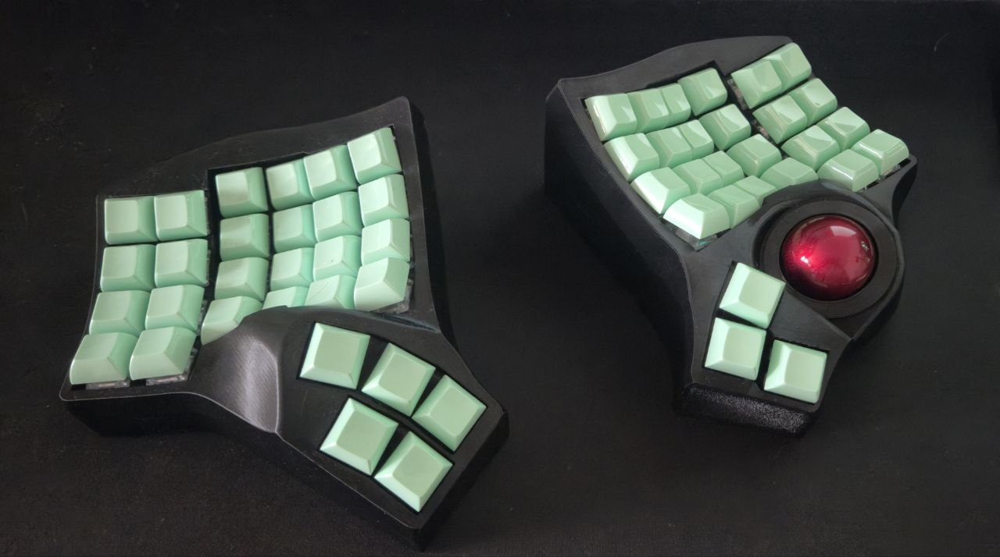

56 keys + PMW3610 trackball, ZMK, wireless. One layout for Russian and English — code included — tuned for vim and Hyprland.
GACS: holding A/S/D/F (mirrored on the right) gives Gui/Alt/Ctrl/Shift, a tap types the letter. Ctrl and the vim leader \ are plain thumb keys.
Sym on Space, Num on the Lang key, Nav on 49, Hypr on Enter — frequent things under the thumbs, rare things (Fn, toggles) further out.
Auto mouse layer on ball movement, scroll/snipe via hold or toggle, and the right half doubles as a one-hand video remote.
layer 0 · always on
Standard letters — Russian types like on any keyboard. The power is in the holds: mods on the home row, layers on the thumbs.
layer 2 · hold the Lang key
Numpad on the right, operator row on the left, separators on the right pinky.
layer 3 · hold Space · one layer for both languages
Left home is Russian punctuation (" - ? !), right home is coding (= ( ) : ;), brackets stacked on two fingers. Nothing reachable from base is duplicated here.
layer 4 · hold thumb 51
Bluetooth and machine picker on top, F-grid on the right, boot/reset in the bottom corners.
layers 5 · 6 · 7 · trackball
Mouse kicks in by itself when the ball moves and fades after about half a second of rest. Clicks on both hands, D/F hold the modes.
The ball scrolls the wheel. Long-term — the Scrl toggle on the base top row; momentary — hold F while the ball is moving.
Slow cursor for pixel-perfect hits. Long-term — the Snipe toggle; momentary — hold D.
layer 8 · hold Enter work in progress
Every key sends a ready-made Super+…: workspaces as a numpad on the left, hjkl focus on the right, window move — Shift on Lang, screenshot — Space.
layer 9 · toggle: Bspc+Enter chord
The right half as a couch remote for video. Enter and exit — the same chord of the two right thumbs (Bspc+Enter from base, Esc+Space from inside).